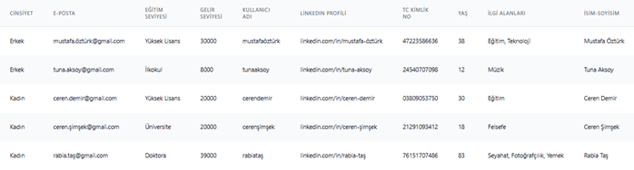
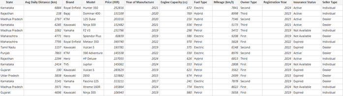

Ede Rojin Delibaş
Synthetic Data Generation System
Introduction
In today's data-driven world, access to high-quality datasets is essential for building, testing, and validating machine learning models. However, real-world data is often limited due to privacy concerns, regulatory constraints, or availability issues. This creates a significant barrier for data scientists, researchers, and developers who need reliable data to experiment and innovate. Synthetic data has emerged as a powerful solution to this problem. By generating artificial datasets that preserve the statistical properties of real data, it becomes possible to simulate realistic scenarios without exposing sensitive information. This project focuses on developing a flexible and scalable synthetic data generation system that allows users to create customized datasets based on their specific needs. The system aims to support both numerical and textual data generation while maintaining realism, usability, and efficiency.
Problem Statement
Despite the growing demand for data in machine learning and analytics, accessing high-quality and usable datasets remains a major challenge. Many datasets are either restricted due to privacy regulations, insufficient in size, unbalanced, or not representative of real-world scenarios. Additionally, generating test data for applications often requires significant manual effort, which can be time-consuming and inefficient. Existing solutions are either too complex, lack flexibility, or fail to produce realistic data distributions. This creates a gap for a user-friendly system that can generate synthetic data while preserving statistical integrity and allowing customization based on user-defined parameters.
Objective
The main objective of this project is to design and develop a synthetic data generation system that enables users to easily create realistic and customizable datasets. Specifically, the system aims to: - Allow users to define the number of rows and columns - Support both numerical and textual data generation - Preserve statistical properties such as distribution, correlation, and variance - Provide an efficient and user-friendly interface - Enable data export for use in machine learning and analytical tasks By addressing these goals, the project seeks to simplify data access and accelerate experimentation in data science workflows.
Data Sources
Unlike traditional data science projects, this system does not rely on a fixed dataset. Instead, it dynamically generates synthetic data or learns from user-provided datasets depending on the selected generation method. The project operates with two primary data sources: Synthetic Data (Generated Data): The system generates data from scratch based on user-defined parameters such as the number of rows, columns, and data types. This method does not require any real dataset and is designed for fast, flexible, and privacy-preserving data creation. User-Provided Dataset (Reference Data): For model-based data generation, users can upload a real dataset. The system then learns the statistical structure and relationships within the data using generative models. This enables the creation of synthetic datasets that closely resemble real-world data in terms of distribution and correlations. This dual approach allows the system to support both rapid data generation and high-fidelity synthetic data modeling, making it suitable for a wide range of use cases.
Methodology
The system is designed as a modular pipeline that supports multiple synthetic data generation approaches. The overall workflow consists of the following stages: User Input & Configuration Users define the structure of the dataset, including the number of rows, columns, and data types. Alternatively, users can upload an existing dataset for model-based generation. Data Generation Approach Selection The system provides two main generation methods: Random (Rule-Based) Generation: Data is generated using predefined rules and libraries without requiring a real dataset. Model-Based Generation: The system trains generative models on user-provided data to learn its statistical properties. Synthetic Data Generation In random generation, libraries such as Faker are used to create realistic categorical and structured data. In model-based generation, models such as CTGAN, TVAE, CopulaGAN, and Gaussian Copula are used to produce statistically similar datasets. Data Processing & Storage Generated datasets are processed using Pandas and stored efficiently for further use. The system ensures consistency and usability of the generated data. Quality Evaluation (Optional) Users can evaluate the quality of synthetic data by comparing it with real datasets using various metrics such as statistical similarity, correlation similarity, and machine learning efficacy. This workflow ensures flexibility, scalability, and usability for both technical and non-technical users.
Results & Evaluation
The system was evaluated based on both performance and data quality across different generation methods. Random Data Generation Results Data generation is fast and computationally efficient Each execution produces unique datasets due to stochastic behavior Logical consistency is maintained through predefined rules This method is highly suitable for testing, prototyping, and rapid development scenarios. Model-Based Data Generation Results Generated data closely matches the statistical properties of real datasets Distributions of numerical and categorical variables are preserved Relationships between variables (e.g., correlations) are successfully learned Rare categories are effectively represented Although this approach requires additional time for model training, it produces significantly more realistic and analytically useful data. Quality Evaluation Metrics To assess the quality of synthetic data, the following metrics were used: Statistical Similarity: Measures distribution alignment between real and synthetic data Correlation Similarity: Evaluates relationships between variables ML Efficacy: Assesses model performance trained on synthetic data Category Coverage: Measures how well categorical values are preserved The results demonstrate that model-based approaches, particularly CTGAN, provide high-quality synthetic data suitable for machine learning and analytical tasks.
Tech Stack
- Python
- Flask
- SDV
- Pandas
Screenshots

